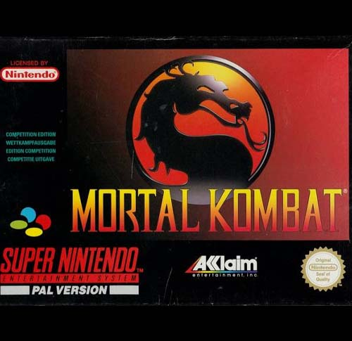

Mortal Kombat
Mortal Kombat é um jogo de luta lançado nos arcades em 1992, desenvolvido e publicado pela Midway Games, e recebendo versões doméstica para diversos consoles pela Acclaim Entertainment. A história do jogo centra em um torneio de artes marciais com consequências globais, que atrai competidores de variadas origens e propósitos. Desenvolvido em apenas dez meses, o jogo contava com gráficos digitalizados baseados em filmagens de atores reais e se destacou pela violência, com personagens sangrando em cada golpe recebido e podendo realizar Finalizações, executando de forma gráfica e sangrenta um adversário derrotado. O sucesso do jogo deu origem a uma série com muitas sequências e trabalhos derivados, incluindo um filme em 1995. No entanto, também provocou muitas controvérsias por sua representação de violência extrema e realista, resultando na introdução de avaliações específicas por idade descritas no conteúdo para jogos de vídeo.
Mortal Kombat é um jogo de luta em que os jogadores batalhavam entre si em partidas. O lutador que drenar completamente barra de saúde do oponente primeiro ganha a rodada, e o primeiro a ganhar dois rounds ganha a luta. Cada rodada é cronometrada; se ambos os lutadores ainda conter saúde restando quando o tempo se esgotar, aquele com mais saúde ganha a rodada. Mortal Kombat também contou com maneiras originais em que ser realizar movimentos especiais. Foi o primeiro jogo a introduzir movimentos especiais realizados exclusivamente usando o joystick. A maioria dos movimentos especiais são realizados tocando no joystick, algumas vezes, terminando pressionando um botão. Ao contrário de jogos de luta anteriores, alguns movimentos necessita de um movimento circular no joystick. Co-criador Ed Boon mais tarde disse, "Desde o início, uma das coisas que nos separa de outros jogos de luta são os loucos movimentos que colocamos nesse, como bolas de fogo e toda os movimentos mágicos, por assim dizer. Outra das inovações do jogo foi o Fatality, um movimento de encerramento executado contra os adversários derrotados para matá-los de uma forma horrível.